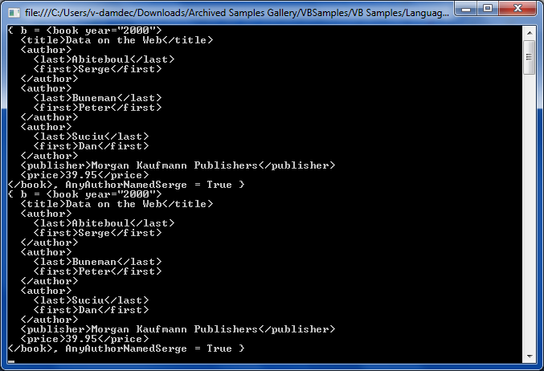

Another simple LINQ to XML sample query. This sample shows the minimal code necessary to write a LINQ to XML query.
Press F5
This sample demonstrates the code that is required to write a LINQ to XML query. A directory named data is included in this sample. The XML file that is queried is included in that directory.

static public string SetDataPath()
{
string path = Environment.CommandLine;
while (path.StartsWith("\""))
{
path = path.Substring(1, path.Length - 2);
}
while (path.EndsWith("\"") || path.EndsWith(" "))
{
path = path.Substring(0, path.Length - 2);
}
path = Path.GetDirectoryName(path);
return Path.Combine(path, "data\\");
}
static public string SetDataPath() { string path = Environment.CommandLine; while (path.StartsWith("\"")) { path = path.Substring(1, path.Length - 2); } while (path.EndsWith("\"") || path.EndsWith(" ")) { path = path.Substring(0, path.Length - 2); } path = Path.GetDirectoryName(path); return Path.Combine(path, "data\\"); }
Sub Main()
SetDataPath()
' List all books by Serge and Peter with co-authored books repeated
Dim doc = XDocument.Load(SetDataPath() & "bib.xml")
Dim b1 = From b In doc...<book> _
Aggregate author In b.<author>.<first> _
Into AnyAuthorNamedSerge = Any(author.Value = "Serge") _
Where AnyAuthorNamedSerge = True
Dim b2 = From b In doc...<book> _
Aggregate author In b.<author>.<first> _
Into AnyAuthorNamedSerge = Any(author.Value = "Peter") _
Where AnyAuthorNamedSerge = True
Dim books = b1.Concat(b2)
For Each b In books
Console.WriteLine(b)
Next
Console.ReadLine()
End Sub
Sub Main() SetDataPath() ' List all books by Serge and Peter with co-authored books repeated Dim doc = XDocument.Load(SetDataPath() & "bib.xml") Dim b1 = From b In doc...<book> _ Aggregate author In b.<author>.<first> _ Into AnyAuthorNamedSerge = Any(author.Value = "Serge") _ Where AnyAuthorNamedSerge = True Dim b2 = From b In doc...<book> _ Aggregate author In b.<author>.<first> _ Into AnyAuthorNamedSerge = Any(author.Value = "Peter") _ Where AnyAuthorNamedSerge = True Dim books = b1.Concat(b2) For Each b In books Console.WriteLine(b) Next Console.ReadLine() End Sub
For more information on XQuery: http://msdn.microsoft.com/en-us/library/ms190262.aspx